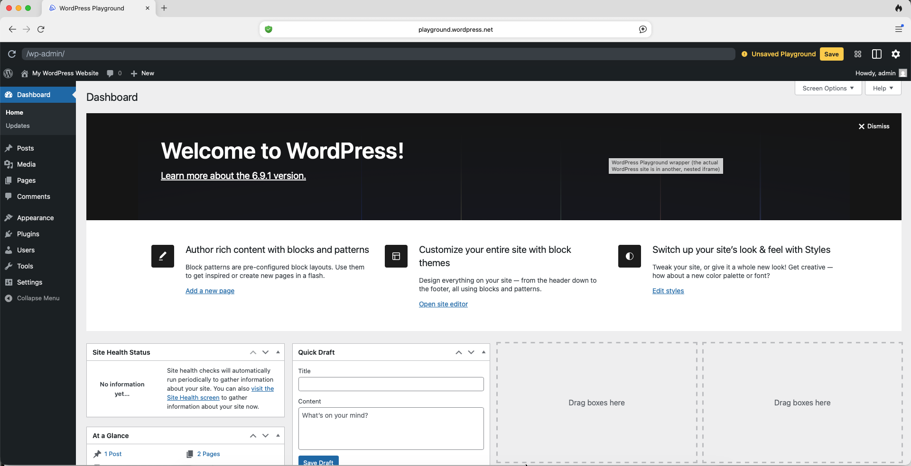
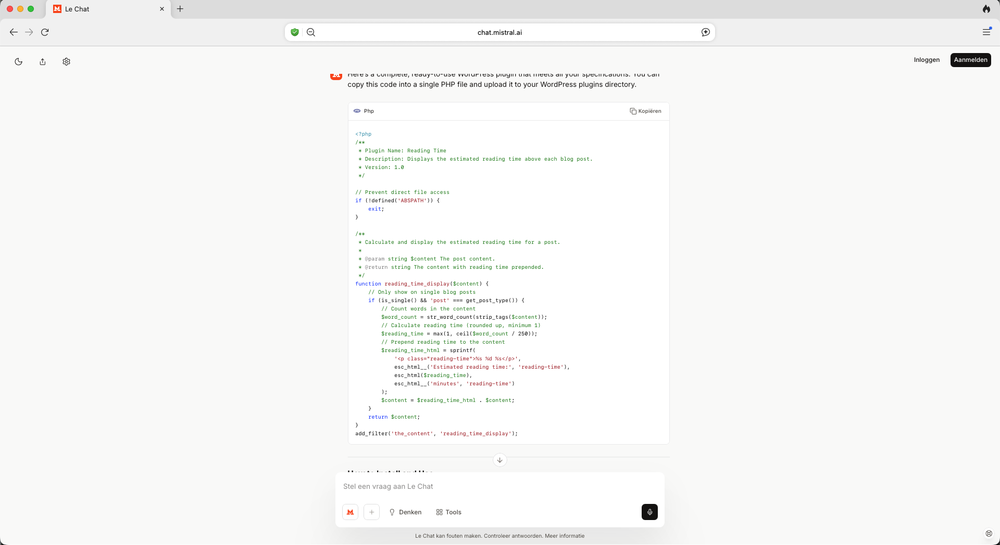
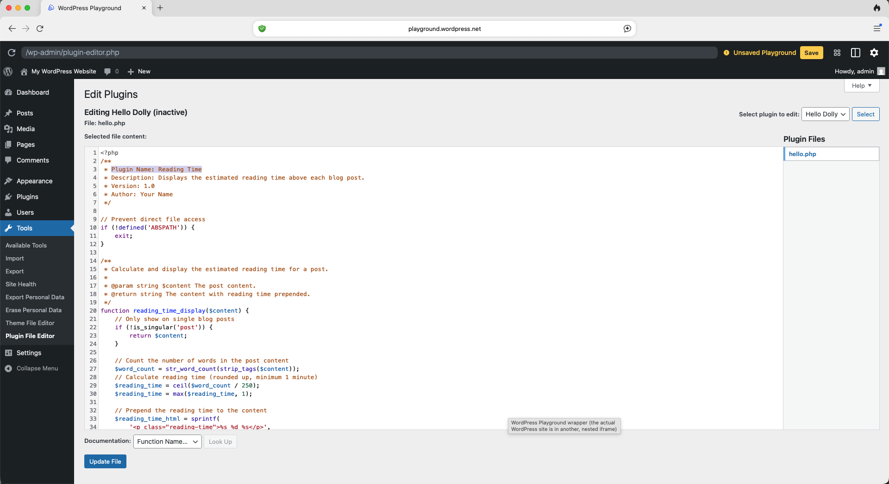
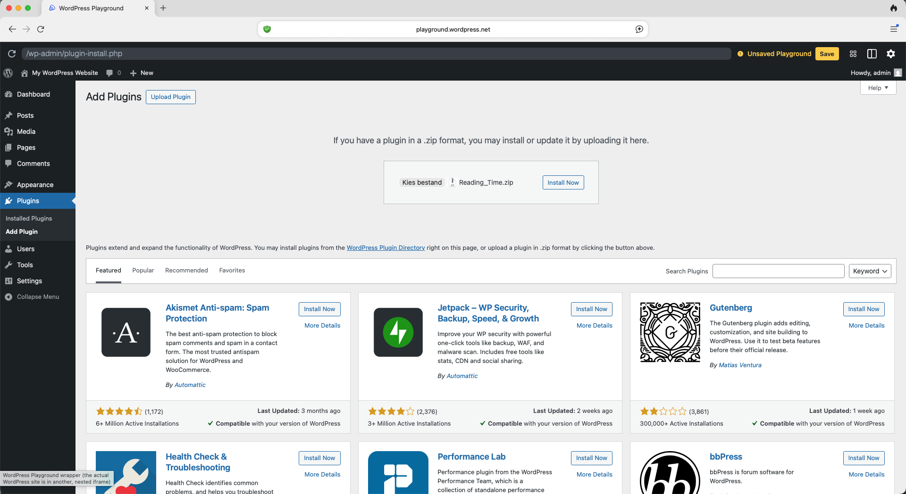
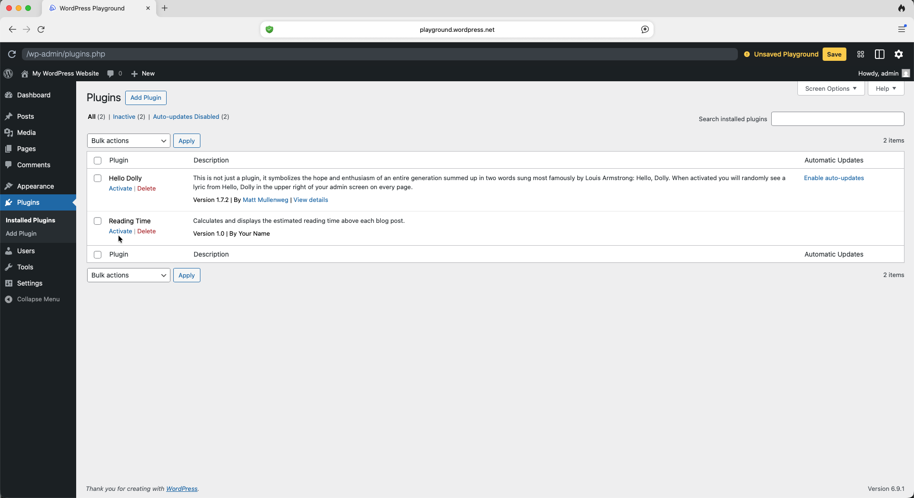
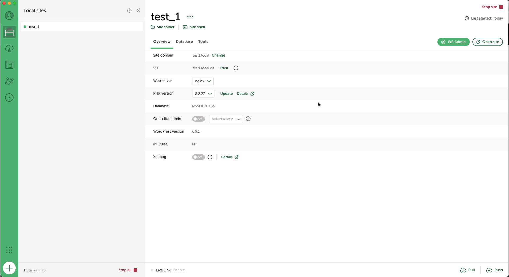
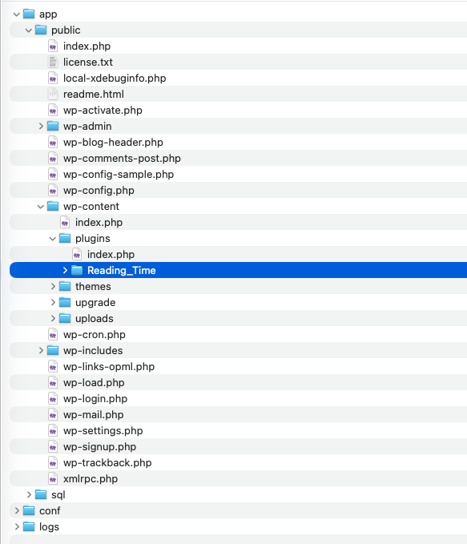

Step-by-step guide
Choose your setup and follow the steps to build and install your plugin.
- No installation needed
- Works in any browser (best in Chrome or Edge)
- Ready in 30 seconds
- Everything disappears when you close the tab
Choose this if you skipped the preparation, don't want to install anything, or just want to try it out quickly.
- WordPress runs locally on your laptop
- Works on Mac, Windows, and Linux
- Your files and plugins are saved for real
- Requires installation (~10 min, see preparation page)
Choose this if you completed the preparation and want to keep your plugin after the workshop.
-
Open WordPress Playground
Go to playground.wordpress.net in Chrome or Edge. WordPress loads in a few seconds — you'll see the admin dashboard.
Important: everything you create disappears when you close the tab. Keep this tab open until you're done. -
Choose your plugin idea
Not sure what to build? Browse the plugin ideas for inspiration, or pick one from the prompts page — those prompts are already written for you.
Keep it simple. One feature that works beats three features that don't. -
Write your prompt and generate the code
Open your AI tool (ChatGPT, Claude, Le Chat, etc.) in a new tab. Use the prompt template from the preparation page, fill in your plugin idea, and send it.
You'll get PHP code back — that's your plugin. Copy all of it.
 -
Install your plugin
Choose one of the two methods:
Easiest Option A — Plugin Editor (no file needed)- In your WordPress admin, go to Plugins → Plugin Editor
- In the dropdown (top right), select Hello Dolly
- Select all the existing code and delete it
- Paste your generated PHP code
- Click "Update File"
If available Option B — Upload a zip (if your AI created one)Some AI tools generate a downloadable zip file. If yours did:
- Go to Plugins → Add New → Upload Plugin
- Choose the zip from your downloads folder
- Click "Install Now"
 -
Activate your plugin
Go to Plugins. Find your plugin — it shows the name you gave it in the plugin header — and click "Activate".
 -
Test your plugin
Click "Visit Site" at the top of the admin and navigate to a post or page. Does your plugin do what you expected?
It works! Now try to improve it — ask the AI to change the styling, add an option, or fix an edge case.
-
Iterate
Something not working, or want to improve it? Go back to your AI tool and be specific about the problem:
- "The plugin is activated but nothing appears. Here is the code: [paste]"
- "PHP error: [paste error message]. Can you fix this?"
- "It works — can you make the text gray and slightly smaller?"
Copy the new code, go back to the Plugin Editor, replace the old code and save again.
This is the real skill: not writing code, but knowing how to describe a problem and steer the AI toward a solution.
-
Start your WordPress site in LocalWP
Open LocalWP. If you haven't created a site yet, click "Create a new site" and follow the steps with default settings. Once your site is listed, click "WP Admin" to open the dashboard.
 -
Choose your plugin idea
Not sure what to build? Browse the plugin ideas for inspiration, or pick one from the prompts page — those prompts are already written for you.
Keep it simple. One feature that works beats three features that don't. -
Write your prompt and generate the code
Open your AI tool in a new tab. Use the prompt template from the preparation page, fill in your plugin idea, and send it. You'll get PHP code back — that's your plugin.
Keep the AI tab open. You'll come back to it when you iterate. -
Save and install your plugin
Choose the method that suits you best:
Recommended Option A — Text editor- Open Notepad (Windows), TextEdit (Mac), or any plain text editor
- Mac TextEdit only: go to Format → Make Plain Text first, or it saves as RTF which won't work as PHP.
- Paste your generated PHP code and save the file as
plugin-name.php(e.g.reading-time.php) - In LocalWP, right-click your site and choose "Open site folder"
- Navigate to
app/public/wp-content/plugins/ - Create a new folder with the same name as your file (e.g.
reading-time) - Move your
.phpfile into that folder
Alternative Option B — Upload a zip via WP AdminUse this if your AI generated a downloadable zip, or if you'd rather not navigate the file system.
If your AI gave you a zip: go straight to step 4.
To create a zip yourself:
- Put your
.phpfile in a folder with the same name - Compress it:
- Mac: right-click the folder → "Compress"
- Windows: right-click → "Send to" → "Compressed (zipped) folder"
- Linux: right-click → "Compress" or run
zip -r plugin.zip folder/
To upload:
- In WP Admin, go to Plugins → Add New → Upload Plugin
- Choose your zip file and click "Install Now"
- Open Notepad (Windows), TextEdit (Mac), or any plain text editor
-
Activate your plugin
Go to Plugins in WP Admin. Your plugin should appear in the list. Click "Activate".
Plugin not appearing? Check that the folder name and PHP filename match, and that the plugin header block (
/* Plugin Name: ... */) is at the very top of the file. -
Test your plugin
Click "Open site" in LocalWP, or use "Visit Site" in WP Admin. Navigate to a post or page and check if your plugin behaves as expected.
It works! Now try to improve it — ask the AI to change styling, add an option, or handle an edge case. -
Iterate
Something not working? Go back to your AI tool and describe the issue clearly:
- "The plugin is activated but nothing appears. Here is the code: [paste]"
- "PHP fatal error: [paste]. Can you fix it?"
- "Works great — can you add a settings page to change the reading speed?"
Copy the new code, open your PHP file in the editor, replace everything, save. Reload the page in WordPress — no reactivation needed.
White screen? Don't panic. In the plugins folder, rename your plugin folder (e.g. add-off). WordPress auto-deactivates it and the white screen disappears. Fix the code, then rename it back.